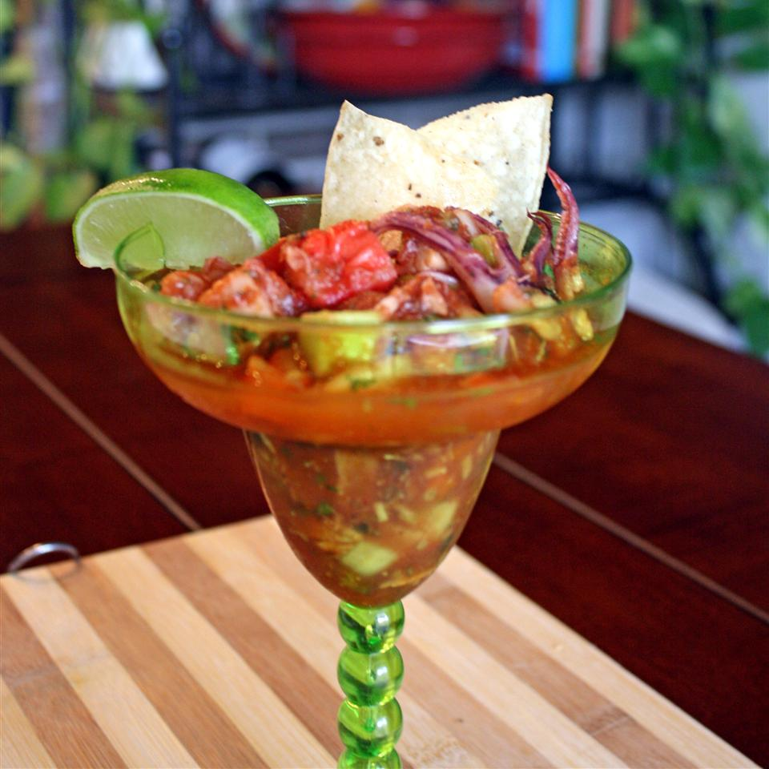

Ceviche Recipe

Description
This latin seafood dish has jumbo sized boil-cooked shrimp in a sauce mixture that contains limes,
ketchup, onion, tomatoes, salt, and pepper.
Ingredients
- raw shrimp
- tomatoes
- onions
- lime
- ketchup
Instructions
- Cut onions longway
- dice tomatoes
- cook shrimp in a rolling boil for 8 minutes
- squeeze 2 limes in a bowl
- add 2 tbsp of ketchup